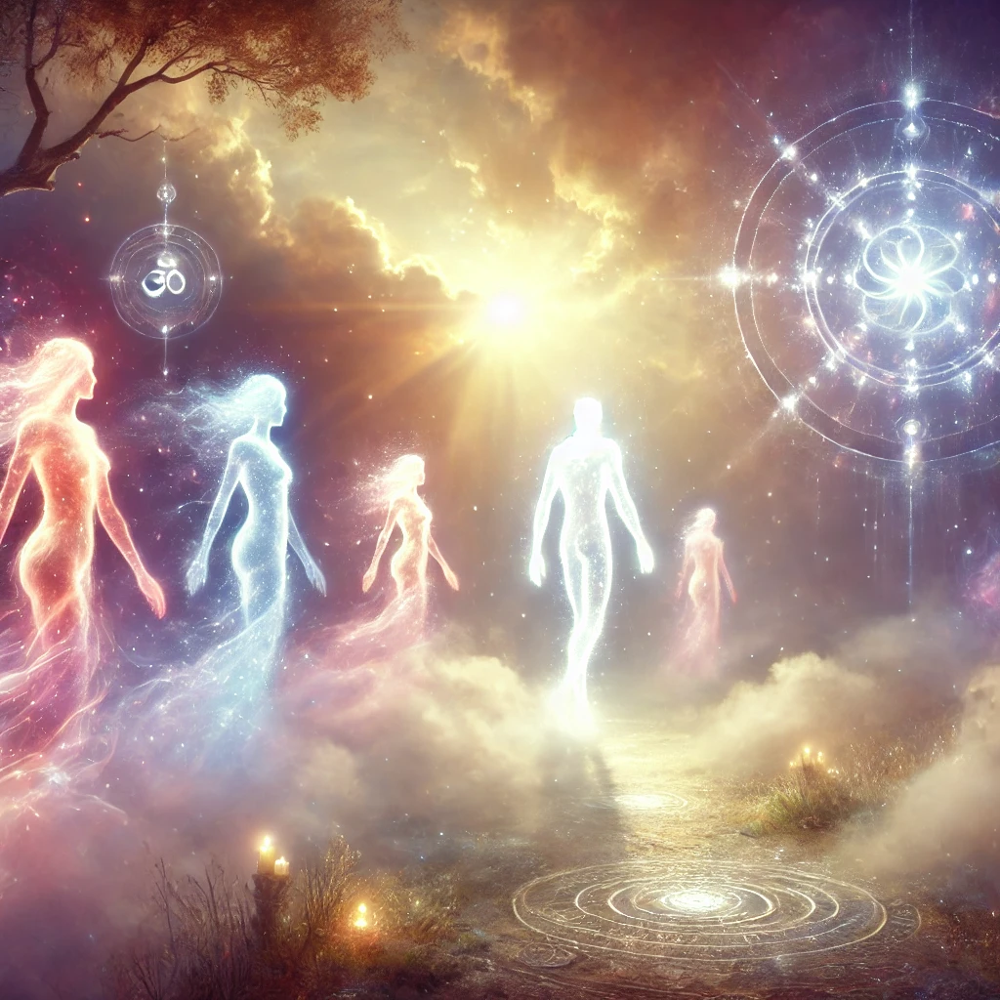

As the mist around you clears, figures begin to emerge—radiant beings of light and energy. Their forms shift between human and celestial, their presence calming yet powerful. You feel their gaze, not judgmental but knowing, as though they have been with you all along, guiding you silently.
One steps forward, its voice a harmony of countless whispers:
“We are the guardians of your journey, reflections of your highest self and the wisdom of the universe. We do not choose your path, but we illuminate it. What is it you seek from us?”
The air shimmers as three distinct energies manifest before you, each one offering a different kind of guidance.

Which guidance will you seek?